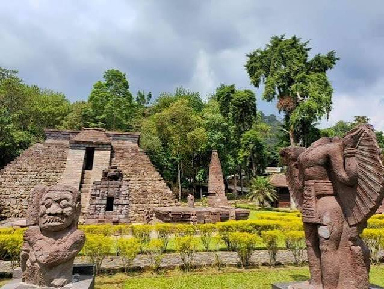

Candi Sukuh berdiri megah di kaki Gunung Lawu, pada ketinggian sekitar 910 meter di atas permukaan laut. Berbeda dengan candi-candi Hindu lainnya di Jawa, Candi Sukuh memiliki arsitektur yang unik — bentuknya menyerupai piramida dengan tangga yang menjulang tinggi, mirip dengan struktur zaman pra-kolonial Amerika.
Filosofi Terukir di Batu
Setiap relief di Candi Sukuh bukan sekadar hiasan. Mereka adalah buku visual yang menceritakan tentang siklus kehidupan, dari kelahiran hingga kematian, tentang kesucian, dan tentang hubungan manusia dengan alam semesta. Relief Lingga-Yoni yang terkenal, misalnya, bukan hanya simbol kesuburan, tetapi juga representasi dari keseimbangan energi dalam kehidupan.
"Di setiap batu Candi Sukuh, ada bisikan nenek moyang yang menunggu didengar."
Fakta Menarik
- Dibangun pada akhir abad ke-15, masa transisi dari Kerajaan Majapahit
- Arsitekturnya unik dan tidak ditemukan di candi lain di Indonesia
- Reliefnya menggambarkan adegan dari wayang dan mitologi Jawa
- Terletak di Desa Karang, Kecamatan Ngargoyoso

Mengapa Penting?
Candi Sukuh adalah bukti bahwa masyarakat Jawa kuno memiliki pemahaman mendalam tentang filsafat, seni, dan arsitektur. Keberadaannya mengingatkan kita bahwa warisan budaya bukan hanya tentang bangunan tua, tetapi tentang kebijaksanaan yang tertanam dalam setiap batu.